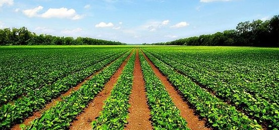
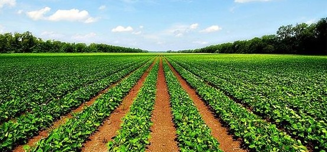

O agronegócio se refere a todas as atividades econômicas relacionadas ao comércio de produtos agrícolas. É também conhecido pelo seu nome adotado internacionalmente: agrobusiness. Dessa forma, integram a cadeia do agronegócio os mais variados perfis, incluindo: Empresas agrícolas.
Empregos Diretos e Indiretos
Empregos diretos e o setor agrícola que emprega diretamente trabalhadores rurais, agrônomos, veterinários, engenheiros agrícolas e outros profissionais especializados na produção agrícola e pecuária. Já os empregos indiretos e a parte do agronegócio que gera uma ampla gama de empregos indiretos nas cidades. Isso inclui vagas em indústrias de processamento de alimentos, transporte e logística, varejo, restaurantes, e serviços relacionados, como consultorias agrícolas e empresas de tecnologia.
Indústrias de Processamento de Alimentos
Muitas fábricas localizadas em áreas urbanas processam produtos agrícolas, transformando matéria-prima em alimentos processados, bebidas, laticínios, entre outros. Isso cria empregos em linhas de produção, manutenção, controle de qualidade e administração.